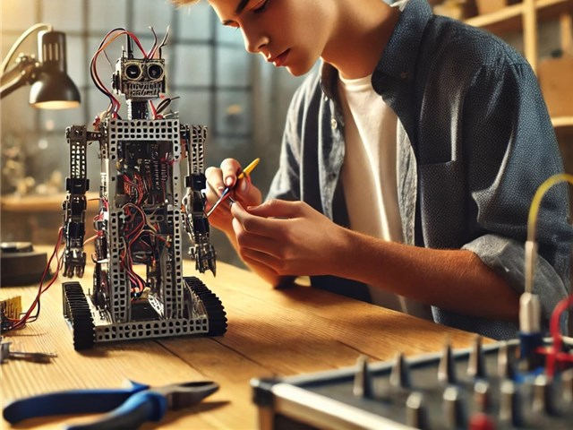

KIDA's Portfolio
関西在住の高専4年生です。メカトロ系の学科に在籍しています。
Works
2023年: 大阪天満宮の３Dモデル製作
3年次に「百年後に残したいもの」というテーマの基礎研究で、私のチームは神社を選び、残す方法として、仮想空間を用いた方法を考えました。
他メンバーには、神社の歴史を調べてもらい、私は大阪天満宮の３Dモデルを作成しました。何度も天満宮に行き、写真を撮影し、そこからスケッチを描いて具体的な構想を作るのに苦労しました。最初は時間のかかっていた設計も時間が経つうちに速く、正確にできるになり、高い設計能力を身に着けることができました。


Skills
授業やクラブ活動、文化祭活動、趣味を含めて利用経験のあるハードウェアやソフトウェアの一覧です。習熟度の目安として累積使用時間が10時間以上のものを「★」、30時間以上を「★★」、100時間以上を「★★★」と表記しています。
- Fusion 360（3D-CAD）
- 汎用旋盤
- ボール盤
- フライス盤
- Arduino
- 電子工作（ブレッドボード）
- Python